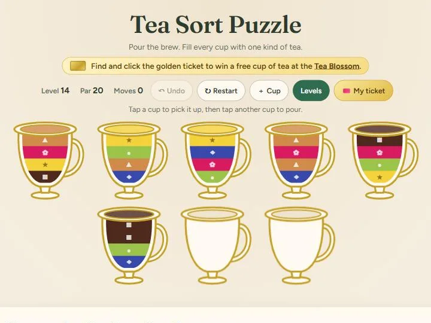
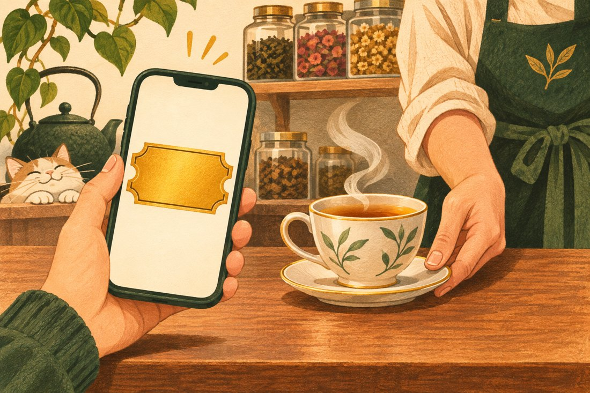

Tea Sort Puzzle and the Art of Getting Customers to Play Along
Tea Sort Puzzle gives you five cups, three kinds of tea, and nine pours if you want all three stars. Two moves in, you may find yourself negotiating with a cup of chai.
Tea Sort Puzzle is by Erica Powers and was built by Ned Games. It’s free to play in your browser, with no account or download needed.

A five-minute break with something to figure out
Between tasks, it’s easy to open your phone for a minute and come up for air twenty minutes later. A round of Tea Sort gives you one thing to focus on and a natural place to stop. You spot patterns, think a pour or two ahead, and get the satisfaction of watching a messy cup come together.
Tap a cup, then tap another to pour. You can pour into an empty cup or onto the same kind of tea if there’s room. Keep an empty cup open as long as you can. It comes in handy right around the time you realize the tea you need is buried under two layers of something else. There are 80 levels, and you can undo a move or add an extra cup if your brilliant plan needs a little help.
How Tea Sort came to life
Erica Powers had been playing some of the games I made to promote Ned Air Filters. She enjoyed the puzzles and noticed the little nods to my business tucked into them. That got her wondering if I could build something similar for her.
When she saw my Water Sort Puzzle, she immediately thought of tea. She had just opened The Tea Blossom, and a puzzle about pouring tea felt right at home in her new tea room. Erica brought the idea to me, and I built Tea Sort Puzzle through Ned Games. Play the original Water Sort Puzzle.
How a golden ticket can get someone through the door
A golden ticket can appear after you complete a level. If you find one, tap it and show it in the game on your phone at The Tea Blossom within 30 days to redeem a free cup of tea. For once, taking a game break can lead to taking a tea break. Visit The Tea Blossom.

The reward makes sense because the business is already part of the game. Players spend a few minutes thinking about tea, and the ticket gives them a reason to try a real cup. You can build that same connection around a product, an event, or something customers already know you for.
- A coffee shop could turn its seasonal drinks into a matching game, share it through a QR code on the counter, and give players an offer for a featured drink after they finish a round.
- A bakery could let players build a pastry box under a move limit, then link to the real assortment they can order. The digital croissant is tragically inedible.
- A local event organizer could share a short trivia game ahead of the event and put the schedule or ticket link on the results screen.
I’ve done this for Ned Air Filters, too. In Filter Jam, you slide filter boxes around a delivery van to free the NED box. In Connect 4 Filters, the familiar four-in-a-row game gets a small twist. The pieces are pleated air filters. Play Filter Jam or play Connect 4 Filters.
Start with a game people would enjoy enough to send to a friend. Then give them one clear next step, whether that’s browsing the menu, claiming an offer, or getting tickets. If you use a game-specific link or offer code, you can see how often players take that step.
Want a game for your business?
I’m Nedu, the maker behind Ned Games. Tell me what you sell and what you’d like customers to do after they play. A rough idea is plenty to get us started.
You can also promote your business across sites including Ned Games, Filtered Thoughts, and Bored Bandit. Ask about advertising with Ned Web Services.